Heartrate:
- 
Cadence:

Altitude:
About
KeepFit is a tool which allows you to retrace your workout steps! You can view where you've visited, and if the data is available your heartrate, cadence and altitude at that point
How to use KeepFit
Simply select the GPX file from your device and upload it here, your route will be displayed on map above, any other data is displayed below the map. Easy!
}})